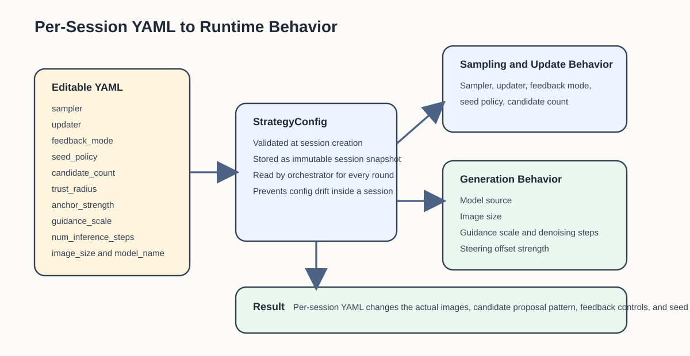
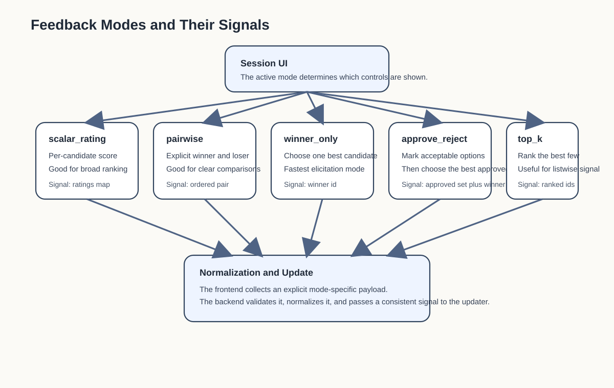

Configuration Manual
Purpose
This guide explains how StableSteering configuration works today, with a focus on the prompt-first session setup flow.
It is the reference document for:
- per-session YAML configuration in the HTML setup page
- how YAML maps to backend
StrategyConfigvalues - which parameters affect generation, steering, and feedback behavior
- how to safely edit, reset, and validate session config
For the shortest run path, see quick_start.md. For the code-level view, see developer_guide.md. For the user-facing workflow, see user_guide.md.
Where Configuration Lives
StableSteering currently uses configuration at two different levels.
1. Runtime Environment Configuration
This controls how the app process runs. Examples include:
- active backend
- GPU/device policy
- model location
- filesystem roots
These values are loaded from application settings in the backend and are not the same as per-session strategy choices.
Relevant code:
2. Per-Session Strategy Configuration
This controls how one user session behaves. Examples include:
- sampler
- updater
- feedback mode
- candidate count
- image size
- trust radius
These values are edited as YAML in the setup page and are parsed into StrategyConfig for each new session.
Relevant code:
Session Setup Flow
The current setup flow is:
- open
/setup - enter the user text prompt
- optionally edit the negative prompt
- edit the YAML strategy block
- submit the setup form
- backend validates the YAML and creates: - an experiment - a session linked to that experiment
- browser opens the new session view
The YAML block is reloaded fresh from the backend template when:
- the setup page is rendered
- the user clicks
Reload default YAML
That makes each session configuration explicit and editable instead of being spread across several independent form controls.
Setup Endpoints
The setup page now uses these routes:
-
GET /setupRenders the HTML page and injects the default YAML template. -
GET /setup/config-templateReturns the canonical default YAML as JSON. -
POST /setup/sessionAccepts prompt fields plusconfig_yaml, validates the YAML, creates the experiment, then creates the session.
This means the YAML document is the source of truth for per-session strategy configuration.

YAML Template
The setup page starts from a backend-generated YAML document similar to this:
sampler: exploit_orthogonal
updater: winner_average
feedback_mode: scalar_rating
seed_policy: fixed-per-candidate
steering_mode: low_dimensional
steering_dimension: 5
candidate_count: 5
image_size: 512x512
trust_radius: 0.55
stagnation_patience: 0
stagnation_trust_radius_scale: 1.0
anchor_strength: 0.7
guidance_scale: 7.5
num_inference_steps: 15
model_name: runwayml/stable-diffusion-v1-5
The exact default text is rendered by:
Parameter Reference
sampler
Controls how candidate steering vectors are proposed for a round.
Supported values:
random_localexploit_orthogonaluncertainty_guidedaxis_sweepincumbent_mixdiversity_shellline_searchplateau_escapeannealed_shellspherical_covertwo_scale_coverquality_diversity_mix
Effect:
- changes how exploration behaves around the current steering state
- changes the balance between exploitation and diversity
Related code:
- random_local.py
- exploit_orthogonal.py
- uncertainty.py
- axis_sweep.py
- incumbent_mix.py
- diversity_shell.py
- line_search.py
- plateau_escape.py
- annealed_shell.py
- spherical_cover.py
- two_scale_cover.py
- quality_diversity_mix.py
updater
Controls how user feedback updates the incumbent steering state.
Supported values:
winner_averagewinner_copylinear_preferencescore_weighted_preferencecontrastive_preferencesoftmax_preferenceborda_preferencebradley_terry_preferencechallenger_mixture_preferenceplackett_luce_preference
Effect:
- determines how aggressively the system moves toward the selected winner
- determines whether feedback is treated as winner-only, score-like, or contrastive evidence
Related code:
- winner_average.py
- winner_copy.py
- linear_pref.py
- score_weighted.py
- contrastive_pref.py
- softmax_pref.py
- borda_pref.py
- bradley_terry_pref.py
- challenger_mixture.py
- plackett_luce_pref.py
feedback_mode
Controls how the UI feedback payload is interpreted.
Supported values:
scalar_ratingpairwisetop_kwinner_onlyapprove_reject
Effect:
- changes which session controls the frontend renders
- changes how the browser collects explicit user preference signals before normalization
Related code:

seed_policy
Controls how seeds are assigned across rounds.
Current value used by the MVP:
fixed-per-roundfixed-per-candidatefixed-per-candidate-role
Effect:
-
fixed-per-roundAll newly rendered candidates in the round share one seed. This is the cleanest way to reduce within-round seed noise. -
fixed-per-candidateEach visible candidate position gets its own deterministic seed. This increases variation inside a batch. -
fixed-per-candidate-roleCandidates with the same sampler role share one deterministic seed, while different roles get different seeds. This is useful when the sampler uses meaningful roles such asexplore,refine,challenger, orvalidation.
Notes:
- round 1 baseline prompt and later carried-forward incumbents still participate in the policy metadata
- carried-forward incumbents preserve the original winning image and seed rather than being re-rendered under a new seed
- all policies are deterministic for the same session and round inputs
steering_mode
Describes the steering representation family.
Current value used by the MVP:
low_dimensional
Effect:
- selects the steering representation contract used by generation
- generation now explicitly routes through the
low_dimensionalsteering path and rejects unsupported modes during rendering
steering_dimension
Controls the size of the low-dimensional steering vector for the session.
Typical values:
358
Effect:
- changes the length of the session steering vector
current_z - changes the dimensionality samplers use when proposing candidate directions
- changes the baseline and incumbent vector length in replay, traces, and session state
Notes:
- this is a per-session YAML setting
- the current implementation still uses
low_dimensionalsteering mode, but the dimension inside that mode is now configurable
candidate_count
Controls how many candidates are shown per round.
Typical values:
345
Current round policy:
- round 1 includes the unmodified prompt baseline as candidate
0 - later rounds include the previous round winner as candidate
0 - remaining candidates come from the sampler
This means candidate_count is the total visible batch size, not the number of newly sampled alternatives.
image_size
Controls the rendered image size.
Format:
WIDTHxHEIGHT
Examples:
512x512768x512
Notes:
- the current real Diffusers path parses this string directly
- poor-quality settings can hurt output quality, especially with SD 1.5
trust_radius
Controls how far the sampler is allowed to move from the current steering state.
Effect:
- larger values increase exploration
- smaller values keep proposals closer to the incumbent direction
stagnation_patience
Controls how many consecutive rounds may end with the same selected image before the sampler widens challenger search.
Effect:
0disables stagnation-triggered widening- positive values activate a simple plateau detector based on repeated selected-image reuse across rounds
- when the threshold is reached, the orchestrator temporarily passes a larger effective trust radius into the sampler for the next round
Notes:
- this is a generic session-level control and is not tied to one specific sampler
- it is most useful with incumbent-carry-forward policies, where later rounds can otherwise freeze visibly
- the widening event is recorded in candidate generation metadata for trace and replay analysis
stagnation_trust_radius_scale
Controls how much the effective trust radius is multiplied when stagnation escape is active.
Effect:
- values above
1.0widen challenger proposals after a plateau is detected - larger values encourage more aggressive escape from repeated incumbent reuse
- values too large can reduce local refinement quality by over-exploring
Notes:
- only applies when
stagnation_patienceis greater than0 - this setting affects sampling, not rendering directly
anchor_strength
Controls how strongly the latent steering vector perturbs the encoded prompt embedding.
Effect:
- larger values make candidate steering offsets more pronounced
- smaller values keep steered candidates closer to the raw prompt embedding
- this now directly affects Diffusers prompt-embedding steering and is persisted in candidate generation metadata
guidance_scale
Controls classifier-free guidance strength during image generation.
Effect:
- larger values usually push images to follow the prompt more literally
- smaller values allow looser, sometimes more varied interpretation
- this now directly affects both real Diffusers rendering and mock trace artifacts
num_inference_steps
Controls how many denoising steps the diffusion pipeline runs per image.
Effect:
- larger values typically improve quality and prompt faithfulness at the cost of latency
- smaller values are faster but can degrade image quality or stability
- this now directly affects both real Diffusers rendering and mock trace artifacts
model_name
Selects the model checkpoint for the session.
Current default:
runwayml/stable-diffusion-v1-5
Important note:
- if a prepared local model matching this Hugging Face id exists, the real backend loads and caches that model for the session
- if the model is missing, session generation fails clearly instead of silently ignoring the setting
- this field now directly affects the real generation backend and is stored in candidate generation metadata
Validation Rules
The YAML editor is flexible, but it is not free-form.
The backend validates the YAML against StrategyConfig.
Validation happens in:
Current validation behavior:
- invalid YAML syntax is rejected
- non-mapping YAML is rejected
- missing required structure falls back only where
StrategyConfigdefines defaults - invalid enum-like values are rejected by schema validation
- invalid numeric types are rejected by schema validation
If validation fails, the setup request returns a structured API error.
Practical Editing Guidance
Good workflow:
- start from the default YAML
- change one or two parameters at a time
- create a session
- observe the session behavior
- compare the resulting trace report and replay
Recommended beginner changes:
- switch
sampler - switch
updater - change
candidate_countfrom5to3or6 - increase or decrease
trust_radius
Changes to make carefully:
- unusual
image_size - very large
candidate_count - nonzero stagnation widening with already aggressive samplers
- combinations that make comparisons harder rather than easier
Relationship To Runtime Settings
Per-session YAML does not override every backend runtime rule.
Examples of process-level rules that still apply:
- GPU-only real Diffusers runtime by default
- no silent fallback to the mock backend
- model preparation requirements
- trace and artifact storage locations
So the session YAML controls the strategy of the run, while the app settings control the environment in which the run is executed.
Example Configurations
Conservative Comparison Session
sampler: random_local
updater: winner_average
feedback_mode: scalar_rating
seed_policy: fixed-per-round
steering_mode: low_dimensional
candidate_count: 5
image_size: 512x512
trust_radius: 0.25
anchor_strength: 0.35
guidance_scale: 7.0
num_inference_steps: 20
model_name: runwayml/stable-diffusion-v1-5
Use this when:
- you want stable nearby comparisons
- you want smoother updates between rounds
More Exploratory Session
sampler: uncertainty_guided
updater: linear_preference
feedback_mode: scalar_rating
seed_policy: fixed-per-round
steering_mode: low_dimensional
candidate_count: 5
image_size: 512x512
trust_radius: 0.4
anchor_strength: 0.45
guidance_scale: 7.5
num_inference_steps: 24
model_name: runwayml/stable-diffusion-v1-5
Use this when:
- you want broader exploration around the current direction
- you want stronger movement after feedback
Diversity-Forward Search Session
sampler: diversity_shell
updater: linear_preference
feedback_mode: winner_only
seed_policy: fixed-per-candidate
steering_mode: low_dimensional
steering_dimension: 5
candidate_count: 5
image_size: 512x512
trust_radius: 0.65
anchor_strength: 0.8
guidance_scale: 7.5
num_inference_steps: 15
model_name: runwayml/stable-diffusion-v1-5
Use this when:
- you want the first few rounds to cover clearly separated alternatives
- you want challenger candidates to probe farther from the incumbent
Directional Search Session
sampler: line_search
updater: linear_preference
feedback_mode: winner_only
seed_policy: fixed-per-candidate
steering_mode: low_dimensional
steering_dimension: 5
candidate_count: 5
image_size: 512x512
trust_radius: 0.65
anchor_strength: 0.8
guidance_scale: 7.5
num_inference_steps: 15
model_name: runwayml/stable-diffusion-v1-5
Use this when:
- you want one batch to test forward, backtrack, and lateral moves explicitly
- you want candidate roles to read more like a local search step than a random spread
Pairwise Preference Session
sampler: exploit_orthogonal
updater: winner_copy
feedback_mode: pairwise
seed_policy: fixed-per-round
steering_mode: low_dimensional
candidate_count: 3
image_size: 512x512
trust_radius: 0.3
anchor_strength: 0.35
guidance_scale: 8.0
num_inference_steps: 20
model_name: runwayml/stable-diffusion-v1-5
Use this when:
- you want sharper A/B-style comparisons
- you want the winner to become the new incumbent exactly
Axis Sweep Ranking Session
sampler: axis_sweep
updater: linear_preference
feedback_mode: top_k
seed_policy: fixed-per-round
steering_mode: low_dimensional
candidate_count: 5
image_size: 512x512
trust_radius: 0.34
anchor_strength: 0.4
guidance_scale: 7.5
num_inference_steps: 22
model_name: runwayml/stable-diffusion-v1-5
Use this when:
- you want more interpretable positive/negative axis probes
- you want to rank the full batch rather than select only one winner
Score-Weighted Rating Session
sampler: exploit_orthogonal
updater: score_weighted_preference
feedback_mode: scalar_rating
seed_policy: fixed-per-candidate
steering_mode: low_dimensional
steering_dimension: 5
candidate_count: 5
image_size: 512x512
trust_radius: 0.55
anchor_strength: 0.7
guidance_scale: 7.5
num_inference_steps: 15
model_name: runwayml/stable-diffusion-v1-5
Use this when:
- you want star ratings to influence the update more richly than winner-only selection
- you want strong ratings to pull the next state toward a weighted centroid
Plateau-Escape Session
sampler: plateau_escape
updater: softmax_preference
feedback_mode: scalar_rating
seed_policy: fixed-per-candidate
steering_mode: low_dimensional
steering_dimension: 5
candidate_count: 5
image_size: 512x512
trust_radius: 0.78
stagnation_patience: 1
stagnation_trust_radius_scale: 1.35
anchor_strength: 0.9
guidance_scale: 7.5
num_inference_steps: 15
model_name: runwayml/stable-diffusion-v1-5
Use this when:
- you want later rounds to keep proposing serious challengers instead of drifting into incumbent-only repetition
- you want score-rich feedback to update the next state with a softmax-weighted preference aggregation
- you are running oracle-style or analyst-style sessions where visible plateau behavior matters as much as final best score
Annealed Shell Session
sampler: annealed_shell
updater: softmax_preference
feedback_mode: scalar_rating
seed_policy: fixed-per-candidate
steering_mode: low_dimensional
steering_dimension: 5
candidate_count: 5
image_size: 512x512
trust_radius: 0.68
anchor_strength: 0.82
guidance_scale: 7.5
num_inference_steps: 15
model_name: runwayml/stable-diffusion-v1-5
Use this when:
- you want early rounds to explore broadly and later rounds to refine automatically
- you want a diversity-forward sampler that still becomes more local as the session progresses
Spherical Cover Session
sampler: spherical_cover
updater: softmax_preference
feedback_mode: scalar_rating
seed_policy: fixed-per-candidate
steering_mode: low_dimensional
steering_dimension: 5
candidate_count: 5
image_size: 512x512
trust_radius: 0.68
anchor_strength: 0.82
guidance_scale: 7.5
num_inference_steps: 15
model_name: runwayml/stable-diffusion-v1-5
Use this when:
- you want each round to cover more angularly separated challenger directions
- you want the sampler to behave more like a geometric cover than a local line probe
Contrastive Ranking Session
sampler: exploit_orthogonal
updater: contrastive_preference
feedback_mode: top_k
seed_policy: fixed-per-candidate
steering_mode: low_dimensional
steering_dimension: 5
candidate_count: 5
image_size: 512x512
trust_radius: 0.55
anchor_strength: 0.7
guidance_scale: 7.5
num_inference_steps: 15
model_name: runwayml/stable-diffusion-v1-5
Use this when:
- you want the update to move toward the top-ranked subset and away from the bottom-ranked subset
- you want ranking information to matter more than a single winner
Borda Ranking Session
sampler: diversity_shell
updater: borda_preference
feedback_mode: top_k
seed_policy: fixed-per-candidate
steering_mode: low_dimensional
steering_dimension: 5
candidate_count: 5
image_size: 512x512
trust_radius: 0.65
anchor_strength: 0.8
guidance_scale: 7.5
num_inference_steps: 15
model_name: runwayml/stable-diffusion-v1-5
Use this when:
- you want a full batch ranking to matter, but in an ordinal rather than score-calibrated way
- you want the update to reward the whole upper ranking rather than only the winner
Bradley-Terry Ranking Session
sampler: diversity_shell
updater: bradley_terry_preference
feedback_mode: top_k
seed_policy: fixed-per-candidate
steering_mode: low_dimensional
steering_dimension: 5
candidate_count: 5
image_size: 512x512
trust_radius: 0.65
anchor_strength: 0.8
guidance_scale: 7.5
num_inference_steps: 15
model_name: runwayml/stable-diffusion-v1-5
Use this when:
- you want ranking feedback to be interpreted as pairwise evidence over the whole candidate set
- you want a more explicit latent-utility model than winner-only or centroid-only updates
Approve / Reject Session
sampler: incumbent_mix
updater: winner_average
feedback_mode: approve_reject
seed_policy: fixed-per-round
steering_mode: low_dimensional
candidate_count: 5
image_size: 512x512
trust_radius: 0.3
anchor_strength: 0.35
guidance_scale: 7.2
num_inference_steps: 18
model_name: runwayml/stable-diffusion-v1-5
Use this when:
- you want to quickly mark acceptable vs unacceptable options
- you still want one approved candidate to become the update target